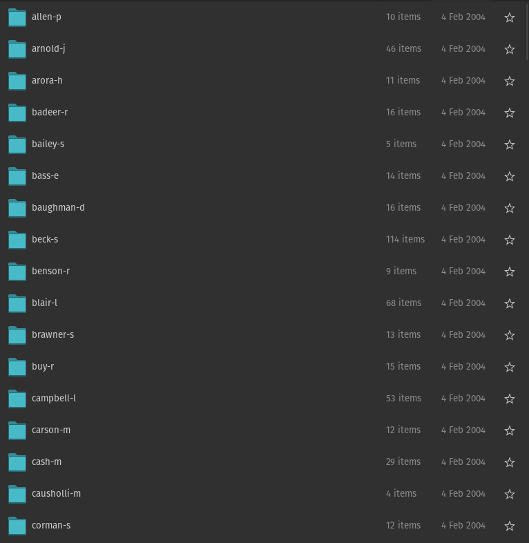
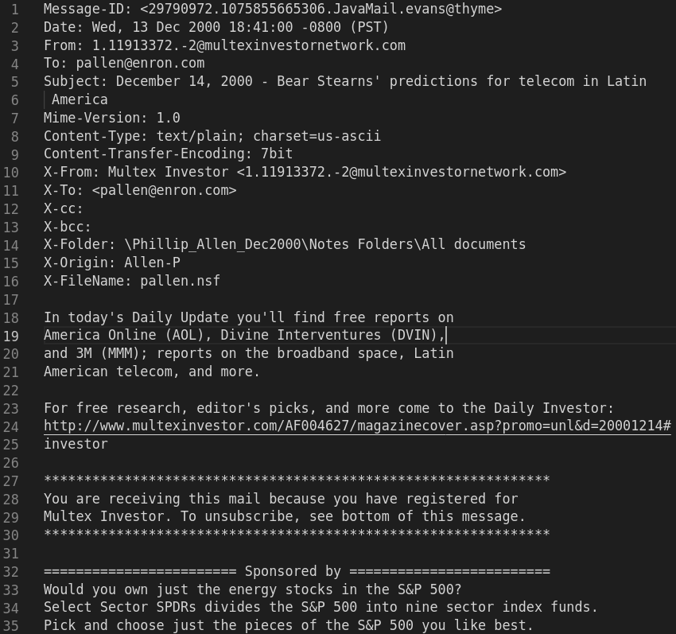
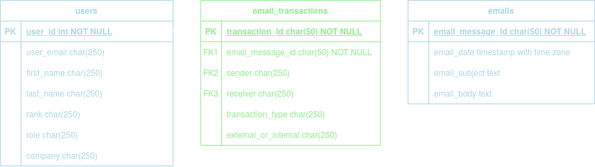
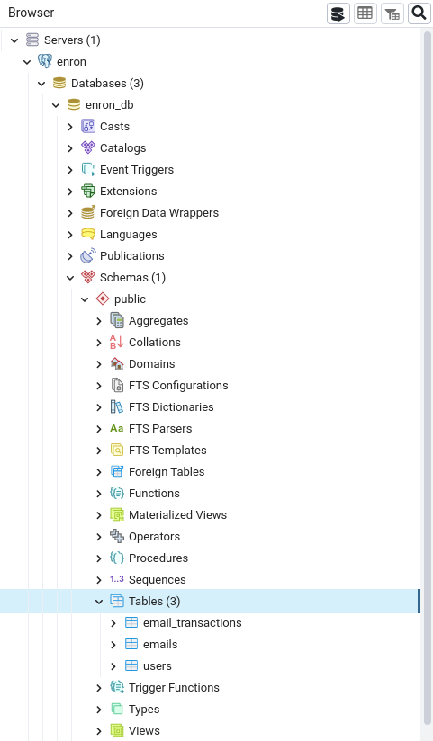
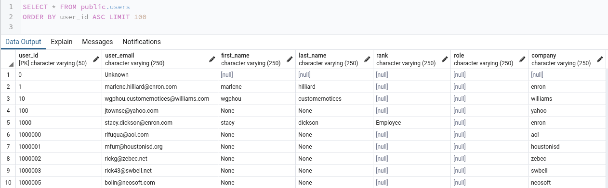
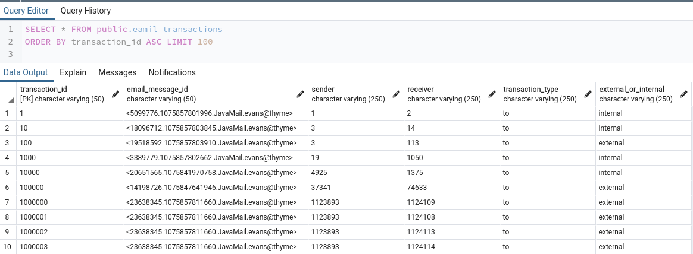
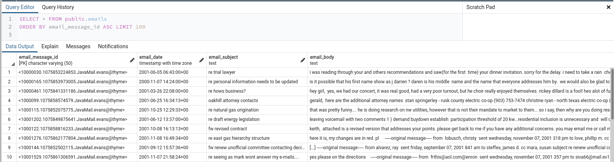

Thank you for joining this course. I hope you enjoy it.
Let's take a few minutes to talk about you.
What is your name?
This is Me
My name is Mahmoud Abdelrazek
I worked with databases here 👇🏾
and I like to read 📖, run 🏃🏾, code 💻 and sleep 💤
About this course
What is a database? And when do you need to use it?
What are the different types of database systems? And how to choose among them?
How to think about your data using database models?
The dataset
In this course we will use Enron's emails dataset.
The dataset and more information about are available on CMU.
Chapter one
- Bob: Maybe we should use a database? 🤔
- Alice: I don't know 😶 don't know what a database is.
You've Got Data 🎉
Once you receive a new dataset, the first step is always to inspect it or at least a sample of it visually and then conduct a quick Exploratory Data Analysis.
Some of the questions you might like to ask are:
What is the nature of your data? text, images, DNA sequances?
What is the data type of each column?
How is your data structured?
Inspecting the data 👀

Inspecting the data 👀

Important attributes 📢
But, why do you care about this dataset?
What questions are you trying to answer?
Maybe you want to find the most active employee in the company?
Maybe you want to find the most comman phrases in the company's communication?
Maybe you want to understand the connections between employees inside the company?
To Database or Not to Database ❓
What is the size of your data ? - larger than excel limit
How often does your data change ? - it gets modified every few minutes
Who will interact with your data ? - multiple researchers
Data Modeling & Data Engineering
Before importing your data to the database we need to engineer it to match the model of the databses management system.
Data Model: is an abstract model that organizes elements of data and standardizes how they relate to one another and to the properties of real-world entities. Wiki
Data Engineering: is the practice designing and building systems for collecting, storing, and analyzing data at scale. coursera
We have to address the elephant in the room
PostgreSQL is an open source Database Management System
Entity Relationship Model
An entity may be defined as a thing capable of an independent existence that can be uniquely identified.
A relationship captures how entities are related to one another wiki
Entity Relationship Diagram

Can you think of a different way to represent the data?
The course server
Our PostgreSQL is accessible here
PG Admin interface

Find enron tables
Let's check the data

Users table
Let's check the data

Email transactions table
Let's check the data

Emails table
Find the most active day 🤸🏾
Find who recieved the highest count of emails 📬
Find who was cc'd/to'd in emails the most 📥
Find who sends the most emails and receives the least 📭